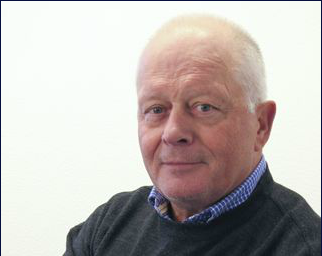
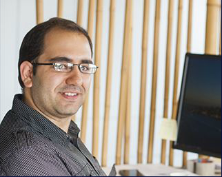
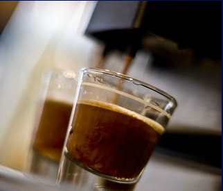

Hein van der Lingen
Hugo Konink
George Kablan
Suzan van der Zanden
Friedel Broeren
Roos Hessels
9e reden
Irma van Gennip
Jos Rumkorf
10e reden
Werken bij Architec.
Hiernaast staan 10 redenen om bij Architec te werken. Mocht je je aangesproken voelen en een bouwkundige opleiding hebben genoten, wij zoeken nog bouwkundig medewerkers voor onze Revit stations. Stagiaires zijn altijd welkom en het is goed om te weten dat wij een door het ROC aanbevolen stagebureau zijn.
Toon je interesse via info@architec.nl of bel met Hein van der Lingen (085-2736457) misschien wordt jij dan wel de volgende reden om bij Architec te werken.
Hein van der Lingen
Projectmanager/eigenaar
Allroung projectmanager
Hugo Konink
Bouwkundige
Aanstormend bouwkundig talent
Friedel Broeren
Opzichter/directievoerder

Ras Amsterdammer. Houdt niet van slap gepraat. Meester in het wegpoetsen van meerwerk. Gaat graag golfen in Florida. Speelde ooit top waterpolo.
Irma van Gennip
Financieel expert
Doet naast Architec de administratie van diverse BV’s in en buiten ons pand. Speelt hockey onder werktijd.
George Kablan
Bouwkundige

Revit modelleur
Roos Hessels
(Interieur) Architect
All round interieur architect. Specialisme retail en styling. Geeft ook styling les aan Artemis te Amsterdam. Houd van koken, Fitness en wandelen.
Jos Rumkorf
Projectleider/toezichthouder

Allround bouwkundige. Komt geregeld op de fiets naar Architc.
Suzan van der Zanden
BIM specialist
BIM specialist met hardloop ambitie.
De 9e reden
Bijzondere lekkere koffie
De 9e reden om bij Architect e werken is de bijzondere lekkere koffie.

De 10e reden
Zeer goed bereikbaar
De 10e reden: Architect is zeer goed bereikbaar met het openbaarvervoer en de auto én er is ruim voldoende parkeerruimte (ook voor de fiets).
Architec
Ingeneurs voor Bouwkunde
SKoon 80E
1511HV Oostzaan
Postbus 37488
1030 AL Amsterdam